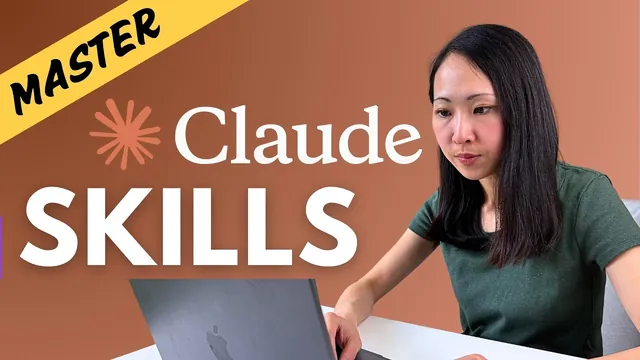

클로드 스킬, 18분이면 감 잡습니다

원본 영상 보기 →
- 스킬의 가치는 이식성과 조합 가능성이에요
- 스킬, MCP, 프로젝트는 역할이 달라요
- 스킬은 켠다고 항상 발동하지 않아요
한 줄 요약
Grace Leung은 Claude Skills(작업 방법을 적어 둔 재사용 지시서)를 "계정 어디서나 꺼내 쓰는 업무 설명서"로 설명해요. 공식 스킬 켜기부터 내 워크플로를 스킬로 포장하는 세 가지 방법, 그리고 Ahrefs MCP까지 엮은 블로그 제작 시연을 18분 안에 보여 줘요.
전체 내용 정리
Skills는 매번 다시 적던 지시를 한 번만 적어 두는 재사용 설명서예요
Grace는 공식 정의가 너무 헷갈리게 쓰여 있다면서 가장 쉬운 이해 방식을 내놓아요. Skills는 reusable instructions manual, 곧 Claude에게 작업을 어떻게 해야 하는지, 어떤 도구를 쓰는지, 어떤 기준을 따르는지 가르치는 재사용 설명서라는 거예요. 한 번 만들어 두면 필요할 때 언제 어디서든 자동으로 실행돼요.
스킬이 없던 때를 떠올려 보면 문제가 분명해져요. 브랜드 보이스나 정해진 절차를 따라야 하는 글쓰기, 마케팅 이메일 같은 반복 업무는 채팅을 새로 열 때마다 같은 지시를 다시 적어야 했거든요. Grace는 이걸 일관성이 떨어지고 시간도 잡아먹는 방식이라고 짚어요.
그럼 Claude 프로젝트(Projects, 지시와 자료를 모아 두는 작업 공간)에 커스텀 지시를 넣어 두면 되지 않느냐는 질문이 나올 수 있어요. Grace의 답은 100% 맞다, 지금 대부분이 그렇게 한다는 거예요. 다만 근본적인 한계가 두 가지 남는다고 해요.
첫째는 이식이 안 된다는 점이에요. 다음 캠페인을 하게 되면 그 프로젝트 안에서 작업하든가 지시를 처음부터 다시 붙여 넣어야 해요. 둘째는 쌓아서 쓸 수 없다는 점이에요. 카피라이팅 전용 프로젝트와 캠페인 분석 전용 프로젝트가 따로 있어도 새 작업에서 둘을 합칠 수 없어요. 각자 완전히 고립된 채로 돌아가죠. 그러다 보면 겹치는 워크플로를 가진 프로젝트가 계속 늘어나요.
그래서 Grace가 내놓는 해법이 스킬이에요. 워크플로 지시와 자료를 프로젝트 안에 묻어 두지 않고 밖으로 꺼내 하나의 패키지로 묶은 다음 계정 단위로 열어 두는 거죠. 웹 앱, Claude Code, Claude API 어디서든 쓸 수 있다고 해요. 이메일 작성 설명서, 시장 조사 설명서, 디자인 템플릿 설명서처럼 여러 개를 만들어 두면 한 작업에서 함께 쓸 수도 있어요.
Grace가 이 기능을 게임 체인저라고 부르는 이유는 지시서의 이식성과 조합 가능성이에요.
Skills는 MCP와 경쟁하지 않고 Projects와도 역할이 달라요
Grace는 스킬이 MCP의 문제를 고치려고 Anthropic이 내놓은 방법이라는 말을 들었다면 큰 오해라고 선을 그어요. Claude 생태계를 한 장으로 그리면 역할이 이렇게 나뉜대요.
Claude 자체가 두뇌예요. 판단을 내리는 핵심 지능이죠. Skills는 특정 작업을 어떻게 할지 적은 재사용 설명서고요. MCP(Claude가 바깥 도구와 연결되는 표준 방식)는 파일 만들기나 데이터베이스 호출처럼 Claude가 원래 아는 것 밖의 일을 하게 해 주는 도구를 줘요. Projects는 지속적으로 이어지는 일을 위해 스킬, MCP 도구, 배경 지식을 한곳에 모아 두는 전용 작업 공간이에요.
Grace는 모든 워크플로에 이 구성 요소가 다 필요한 건 아니라고 말해요. 서로 경쟁하는 게 아니라 쌓아 올리는 블록이며 함께 있도록 설계됐다는 설명이에요. 그래서 내 워크플로가 필요로 하는 만큼만 골라 섞으면 된다는 거죠.
스킬은 세 종류이고 공식 스킬만 켜도 랜딩 페이지와 문서가 곧바로 나와요
Grace는 이번 시연을 Claude 웹 애플리케이션으로 진행해요. 스킬을 쓰려면 먼저 설정(settings)의 capabilities에서 code execution과 file creation이 켜져 있어야 해요. 이걸 켜면 미리 만들어진 스킬 목록이 보여요.
첫 번째 종류는 Anthropic이 만든 공식 스킬이에요. 목록이 보인다고 전부 켜지 말라는 게 Grace의 당부예요. 정말 쓸 것만 고르세요. 스킬이 많으면 Claude가 워크플로를 실행할 때 오히려 헷갈릴 수 있거든요. 공식 스킬 외에 Notion 같은 파트너사가 만든 스킬도 있어요. 공식 GitHub 저장소를 아래로 내려 보면 partner skills 항목이 있고 거기서 내려받아 Claude에서 쓸 수 있대요. 링크는 영상 설명란에 둔다고 해요.
두 번째는 내가 직접 만드는 커스텀 스킬이에요. 내 워크플로 지시, 리소스 템플릿, 심지어 코딩 스크립트까지 담을 수 있어요. 공식 형식에 맞춰 스킬 파일을 준비하고 업로드하면 활성화돼요. 기술에 자신이 없는 비개발자라면 공식 스킬인 skill-creator를 켜 두고 그걸로 만들면 된다고 Grace가 알려 줘요. Claude를 내 일하는 방식에 맞추는 방법이 바로 이거예요.
세 번째는 다른 Claude 사용자들이 만든 커뮤니티 스킬이에요. 생태계가 커지는 중이지만 보안은 조심해서 봐야 한다고 Grace가 짚어요.
한 가지 현실적인 팁이 더 있어요. Anthropic 설명으로는 스킬을 켜 두면 문맥상 관련 있을 때 자동으로 발동돼요. 그런데 Grace의 경험상 기대만큼 매번 발동하지는 않는대요. 그래서 계정 단위 custom instructions에도 "관련 스킬을 항상 고려하라"는 취지의 문구를 넣어 두라고 권해요. 이렇게 해 두면 Claude가 응답할 때 쓸 만한 스킬이 있는지 늘 먼저 살펴요.
종류를 알았으니 시연을 볼게요. Grace의 첫 시연은 공식 theme-factory 스킬이에요. 설정에서 켜 둔 상태에서 PowerTrac이라는 새 SaaS 제품의 랜딩 페이지를 만든다고 가정해요. 카피는 이미 있으니 그 카피를 Claude에 첨부하고 "멋진 테마로 랜딩 페이지 목업을 만들어 달라"고 요청해요.
여기서 눈여겨볼 점은 프롬프트에 특정 스킬을 언급하지 않았다는 거예요. 그런데도 Claude가 theme factory 스킬을 확인하며 테마를 고르기 시작해요. 앞서 계정 단위 custom instructions를 설정해 둔 덕분이라고 Grace가 설명해요. 1분쯤 지나 랜딩 페이지가 완성되고 theme factory가 가진 10개 테마 가운데 Claude가 tech innovation 테마를 골랐대요. 꽤 멋지고 기술 기업다운 인상이라고 해요. 랜딩 페이지나 프레젠테이션 같은 어떤 문서에도 이렇게 바로 쓸 수 있는 스타일을 입힐 수 있어요.
두 번째 예시는 같은 제품의 출시 안내 FAQ를 사내 팀에 공유할 Word 문서로 만들어 달라는 요청이에요. 이번에는 Claude가 문서 제작 스킬(document creation skills)을 읽고 형식이 잘 갖춰진 문서를 만들어요. 7쪽 분량으로 꽤 충실했고 앞의 랜딩 페이지와 같은 테마가 그대로 적용됐어요.
Grace의 불만이 하나 있었어요. FAQ 답변을 쓸 때 쓰길 기대했던 사내 커뮤니케이션 스킬(internal communication skills)을 Claude가 쓰지 않았다는 거예요. 여기서 스킬의 한계가 드러나요. 스킬 발동은 문맥에 크게 의존해서, 관련 맥락을 충분히 주거나 채팅에서 쓸 스킬을 직접 지정해야 해요.
결과 문서는 내려받아도 되고 Google Drive에 올려 팀과 공유해도 돼요. 정리하면 theme-factory 같은 내장 스킬은 켜 두고 맥락만 잘 주면 바로 워크플로에 들어와요.
커스텀 스킬을 만드는 첫 번째와 두 번째 길은 이미 있는 것을 확장하고 포장하는 거예요
공식 스킬로 안 되는 일이 있을 때는 새 스킬을 만들면 되고 Grace는 방법을 세 가지로 나눠요. 첫 번째는 공식 스킬을 확장해 새 스킬로 다시 포장하는 방법이에요.
예시는 꽃 사업을 하는 회사예요. 회사에 브랜드 프레젠테이션 템플릿이 있고 덱을 만들 때마다 Claude가 이 템플릿을 쓰게 하고 싶어요. 그래서 템플릿 파일을 첨부하고 먼저 공식 PowerPoint 제작 스킬을 읽게 한 다음 그걸 확장하는 branded deck이라는 스킬을 만들어 달라고 요청해요.
Grace는 새 스킬을 만들 때 맥락을 충분히 주라고 강하게 권해요. 구체적으로는 이런 것들이에요.
- 스킬이 언제 발동돼야 하는지
- 사용 예시
- 구체적인 가이드라인
- 중복을 피하도록 부모 스킬을 참조하라는 지시
- 형식이 정확히 맞도록 공식 skill-creator를 쓰라는 지시
- 결과를 바로 쓸 수 있는 파일로 내보내라는 요청
Claude가 부모 스킬과 skill-creator를 읽어 구조를 파악하고 업로드한 템플릿에서 색상과 글꼴을 추출한 뒤 zip 파일로 새 스킬을 내놓아요. 그 파일을 받아 설정의 capabilities에서 업로드하면 활성화돼요. 이제 어떤 채팅에서든 쓸 수 있어요.
시험 삼아 Q3 사업 성과 리뷰 프레젠테이션을 만든다고 해요. 먼저 매출 데이터와 마케팅 리서치 보고서를 올리고 핵심 인사이트를 뽑아 달라고 하면 몇 분 만에 요약 표가 들어간 종합 브리프(executive brief)가 나와요. 전략적 인사이트를 이런 식으로 내놓는 게 Claude의 강점이라고 Grace는 말해요. 이어서 그 인사이트를 바탕으로 회사 브랜드가 적용된 덱을 만들어 달라고 해요. 이때 company branded라는 핵심어를 일부러 강조해서 방금 만든 branded deck 스킬이 확실히 발동되게 했어요. 실제로 Claude가 그 스킬을 불러 브랜드 가이드라인과 프레젠테이션 요건을 파악하고 공식 PowerPoint 스킬까지 읽은 뒤 덱을 만들어요.
결과를 보면 테마와 스타일은 회사 템플릿과 똑같아요. 다만 여백과 레이아웃에 손볼 곳이 조금 남았고 차트를 쓰라고 했는데도 표만 들어갔어요. 그래도 내용은 대부분 맞고 레이아웃에 잘 들어맞았어요. 문제가 보이면 Claude에게 돌려주어 스킬을 고쳐 달라고 하면 돼요. 100% 완성은 아니어도 이미지와 스타일링이 많은 복잡한 테마였고 다른 AI 모델과 비교하면 Claude만이 한 번의 워크플로로 이 정도 프레젠테이션을 만든다고 Grace는 평가해요. 마케터나 직장인에게 가장 즉각적이고 쉬운 빠른 성과라고 덧붙여요.
이 방식은 프레젠테이션에만 한정되지 않아요. 문서, Excel 스프레드시트, 랜딩 페이지까지 얼마든지 넓힐 수 있어요. 처음부터 시작하지 말고 기존 공식 스킬을 먼저 활용해 그 위에 쌓으라는 게 Grace의 조언이에요.
두 번째 길은 이미 쓰고 있는 워크플로를 새 스킬로 포장하는 방법이에요. 이것도 바로 효과를 보는 방법이라고 해요. Grace에게는 팀 리포팅용 커스텀 Claude 프로젝트가 있어요. Notion 데이터베이스에서 프로젝트 현황을 가져와 맞춤 대시보드를 만드는 프로젝트예요. 역할, 쓸 도구, 워크플로 상세, 출력 형식을 적은 아주 자세한 커스텀 지시와 출력 템플릿 파일까지 이미 들어 있어요. 스킬로 옮기기에 아주 좋은 사례죠.
만드는 순서는 이래요.
- 먼저 Notion MCP를 켜요.
- Notion Project Dashboard라는 새 스킬을 만들어 달라는 프롬프트를 넣어요.
- 이때 가장 중요한 건 Claude가 먼저 사용 가능한 Notion MCP 도구들을 살펴보고 이 워크플로에 정말 필요한 도구만 고르게 하는 거예요. MCP 서버에는 도구가 너무 많이 들어 있어서 스킬이 필요 없는 도구까지 전부 불러오게 하고 싶지 않기 때문이에요.
- 새 스킬에 대한 맥락을 적고 프로젝트의 전체 커스텀 지시와 워크플로 상세를 그대로 붙여 넣어요.
- 출력 템플릿 파일도 업로드해요.
바로 새 스킬이 만들어지고 업로드해서 활성화하면 끝나요. 그다음엔 프로젝트에 매이지 않고 새 채팅에서 "Notion에서 프로젝트 현황 대시보드를 만들어 줘"라고만 해도 Claude가 Notion MCP 서버를 호출하고 Notion Project Dashboard 스킬을 발동시켜요. 대시보드 형식과 스타일도 프로젝트 안에서 만들 때와 똑같이 나온다고 해요. 정리하면 스킬로 검증된 워크플로를 이식 가능하게 만들고 MCP와 결합하면 Claude와 대화하는 어디로든 가져갈 수 있다는 거예요.
세 번째 길은 여러 스킬을 처음부터 만들어 MCP와 프로젝트 안에서 함께 돌리는 거예요
더 고급 단계는 새 스킬 여러 개를 처음부터 만들고 MCP와 함께 Claude 프로젝트 안에서 쓰는 방법이에요. Grace의 사례는 키워드 리서치부터 실제 블로그 콘텐츠 작성까지 이어지는 블로그 제작 워크플로예요.
첫 스킬은 Ahrefs MCP를 쓰는 키워드 리서치 스킬이에요. Ahrefs MCP는 도구가 아주 많으니 앞에서처럼 먼저 도구를 살펴보게 해요. 이번에는 맥락과 함께 워크플로 상세도 넣어요. Claude에게 프로세스를 이해시키고 그대로 따르게 가르쳐야 하기 때문이에요. 시연용으로 단순화한 프롬프트이고 실제로는 더 포괄적인 버전을 첨부하라고 Grace가 권해요. 스킬 품질이 거기서 갈리니까요. 1분 만에 키워드 리서치 스킬이 만들어져요.
두 번째는 블로그 작성(blog writer) 스킬이에요. 이번에는 워크플로 상세에 더해 출력 가이드라인도 넣어요. 만들어진 모든 블로그 글이 AI 검색 엔진에 최적화되도록 하려는 의도예요.
그다음 커리어 코칭 플랫폼의 브랜드 프로젝트를 준비해요. 제품 개요 파일과 제품 자료가 들어 있고 브랜드 보이스와 타깃 독자를 간단히 적은 커스텀 지시도 있어요. 여기에 Skills Workflow라는 항목을 덧붙여서 SEO 콘텐츠와 블로그 글쓰기 작업에는 keyword research와 blog writer 스킬을 쓰라고 적어 뒀어요.
여기서 Grace가 알려 주는 팁이 두 가지예요. 하나는 프로젝트 지시에 워크플로 상세를 다시 적을 필요가 없다는 거예요. 어떤 작업에 어떤 스킬을 쓸지만 알려 주면 돼요. 다른 하나는 프로젝트 커스텀 지시에 쓸 수 있는 도구도 적어 두라는 거예요. 그러면 Claude가 이 프로젝트에서 어떤 도구를 쓸 수 있는지 분명히 알아요.
이제 캠페인 출시의 일환으로 LinkedIn에서 퍼스널 브랜드를 쌓는 법에 대한 블로그 글을 쓴다고 해 봐요. 프롬프트는 아주 짧아요. 그런데도 Claude가 blog writing 스킬과 keyword research 스킬을 부르고 Ahrefs MCP 도구가 관련 키워드와 질문 데이터를 가져와요. 지시에 넣어 둔 대로 웹 검색까지 하고요. 블로그 작성 워크플로의 세부 단계를 그대로 따라 서식을 갖춘 Word 문서를 내놓아요.
결과는 6쪽 분량으로 꽤 충실했고 Grace가 원한 형식 그대로였어요. 요약 성격의 too long, don't read 섹션을 두고 질문 형태의 소제목을 쓰고 글머리표를 활용했어요. 이것도 Google Drive에 올려서 이어서 다듬을 수 있어요. 시연은 단순화한 버전이라서 내부 링크, 외부 링크, 이미지까지 블로그 콘텐츠에 넣을 수 있고 고칠 부분은 Claude에게 말하면 바꿔 줘요.
언제 스킬을 만들어야 하는지는 질문 세 개로 가려 보세요
스킬이 정말 필요한지, 새로 만들 가치가 있는지는 Grace가 던지는 세 가지 핵심 질문으로 판단해요.
- 서로 다른 채팅에서 같은 지시를 세 번 이상 반복해야 하나요?
- 현실에서 같은 일을 시킨다면 사람에게 그 프로세스나 기준을 가르쳐야 하나요?
- 매번 품질이나 형식이 일정하게 유지돼야 하나요?
체크가 두 개를 넘으면 넘을수록 스킬을 만드는 편이 낫다고 Grace는 말해요.
비용 쪽 주의점도 있어요. Pro 플랜이라면 주간 사용량 한도가 꽤 부담이 될 수 있어서 가장 자주 반복하는 워크플로에만 커스텀 스킬을 만들어 토큰이 낭비되지 않게 하라고 해요. 또는 스킬 제작을 다른 AI 모델에 맡겨도 돼요. 공식 skill-creator의 zip 파일을 ChatGPT에 올리고 구조를 공부하게 한 다음 내 요구사항을 넣어 새 스킬을 만들어 달라고 하면 된대요. Grace는 이 방법이 100% 통한다고 말해요.
마지막으로 유지 보수 이야기예요. 스킬은 정적이에요. 특히 MCP 도구 함수를 호출하는 스킬이라면 그 함수가 시간이 지나며 바뀔 수 있어서 손을 봐야 할 때가 와요. 그래서 Grace는 스킬에 백업 플랜(backup plan)을 넣으라고 해요. 도구 호출이 실패했을 때 어떻게 할지 미리 적어 두는 거죠. 또 한 스킬 안에서 너무 많은 MCP 도구를 쓰지 말고 단순하게 가져가라고 당부해요.
핵심 인사이트
- 스킬의 가치는 이식성과 조합 가능성이에요: 프로젝트 안에 갇혀 있던 지시를 계정 단위로 꺼내 두면 새 작업에서 여러 스킬을 한꺼번에 불러 쓸 수 있어요. Grace는 프로젝트 커스텀 지시의 한계가 바로 이 두 가지라고 짚어요.
- 스킬, MCP, 프로젝트는 역할이 달라요: 스킬은 작업 방법, MCP는 바깥 도구, 프로젝트는 지속적인 일을 위한 작업 공간이에요. 경쟁이 아니라 같이 쓰라고 설계된 블록이라서 필요한 만큼만 조합하면 돼요.
- 스킬은 켠다고 항상 발동하지 않아요: Grace의 시연에서도 사내 커뮤니케이션 스킬은 기대한 곳에서 안 쓰였어요. 계정 단위 custom instructions에 관련 스킬을 항상 고려하라고 적고 프롬프트에서 핵심어로 스킬을 가리키는 게 실전 대책이에요.
- 처음부터 만들기보다 있는 것을 확장하고 포장하는 편이 빨라요: 공식 스킬을 부모로 삼아 확장하거나 이미 잘 돌아가는 프로젝트의 지시를 스킬로 옮기는 게 Grace가 말하는 가장 즉각적인 성과예요.
- 스킬을 만들 때는 맥락을 많이 줄수록 좋아요: 발동 조건, 사용 예시, 가이드라인, 부모 스킬 참조, 출력 형식까지 적어 주라고 해요. MCP를 쓰는 스킬이라면 필요한 도구만 고르게 하는 단계가 빠지면 안 돼요.
- 스킬은 정적이라서 관리가 필요해요: MCP 도구가 바뀌면 스킬도 손봐야 하니까 실패 시 백업 플랜을 넣고 한 스킬에 쓰는 MCP 도구 수를 줄이세요.
오늘 당장 해볼 것
- Claude 웹 앱에서 설정(settings)의 capabilities로 들어가 code execution과 file creation을 켜 보세요. 이게 켜져 있어야 스킬이 작동하니까 출발점으로 가장 먼저 확인할 항목이에요.
- 공식 스킬 목록에서 실제로 쓸 것만 켜 보세요. 마케터라면 theme-factory와 문서 제작 계열을 먼저 켜는 걸 권해요. 이어서 이미 써 둔 랜딩 페이지 카피를 첨부하고 "이 카피로 랜딩 페이지 목업을 만들어 줘. 어울리는 테마로"라고 요청하면 스킬 발동을 바로 눈으로 볼 수 있어요.
- 설정의 계정 단위 custom instructions에 "응답할 때 관련된 스킬이 있는지 항상 먼저 살펴보라"는 취지의 문장을 넣어 보세요. Grace는 스킬이 매번 자동으로 발동하지는 않았다고 하니 이 한 줄이 발동률을 올려 줘요.
- 회사 브랜드 템플릿(PowerPoint)이 있다면 이렇게 해 보세요. 템플릿을 첨부하고 "공식 PowerPoint 스킬을 먼저 읽고 이를 확장하는 branded deck이라는 스킬을 만들어 줘. 발동 시점, 사용 예시, 가이드라인을 반영하고 부모 스킬을 참조해 중복을 피하고 skill-creator로 형식을 맞춰서 업로드 가능한 파일로 줘"라고 요청해요. 받은 zip을 capabilities에서 업로드한 뒤 새 채팅에서 "company branded"라고 콕 집어 덱을 요청하면 스킬이 발동되는지 확인할 수 있어요.
- 지금 쓰는 프로젝트 중 지시가 가장 긴 것을 하나 골라 스킬로 옮겨 보세요. MCP를 쓰는 워크플로라면 "먼저 사용 가능한 MCP 도구를 살펴보고 이 워크플로에 꼭 필요한 도구만 고른 뒤 스킬로 만들어 줘"라고 시작하고 기존 지시와 출력 템플릿을 같이 올리면 돼요. 세 번 이상 반복하는 일이어야 스킬로 만들 가치가 있다는 Grace의 기준에 맞는지도 확인하세요.